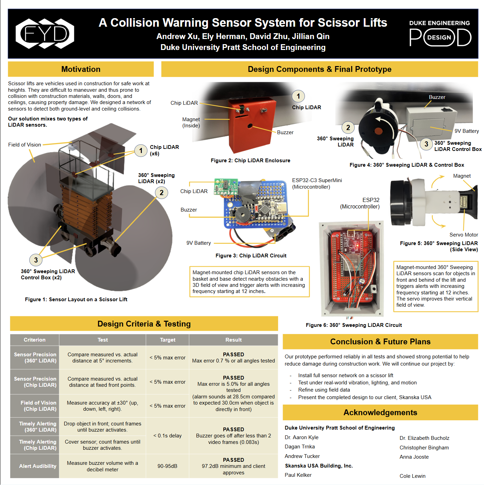
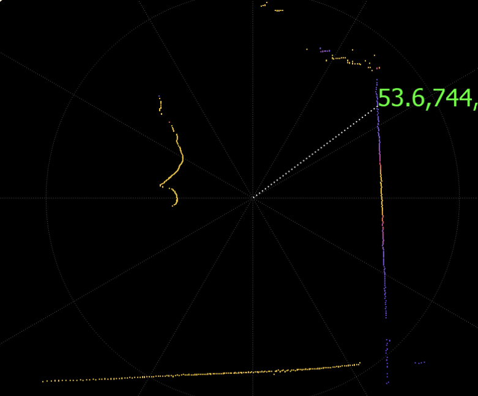
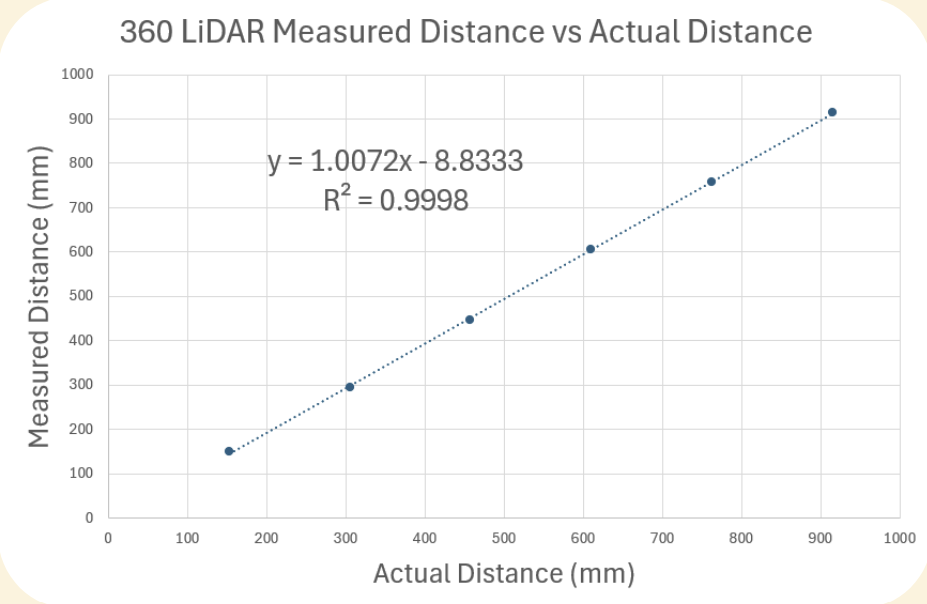

Final design poster presented at Duke Engineering Design POD — click to enlarge
A dual-sensor LiDAR network designed for scissor lifts to detect nearby obstacles in real time and alert operators before collisions occur — developed for Skanska USA Building, Inc. as part of Duke University's Engineering Design POD program.

Final design poster presented at Duke Engineering Design POD — click to enlarge
Scissor lifts are widely used in construction for elevated work, but their large size and sudden acceleration make them difficult to maneuver safely. Collisions with walls, doorframes, ceilings, and construction materials cause property damage and put workers at risk. Our team was commissioned by Skanska USA to design a sensor system that detects obstacles in real time and alerts the operator before a collision occurs.
Our solution pairs two complementary LiDAR sensor types mounted across the lift — one for close-range 3D detection and one for 360° sweeping coverage. Both trigger audible buzzer alerts with increasing frequency as the lift approaches an obstacle, starting at 12 inches of clearance. All units are self-contained, magnetically mounted, and require no client-side code configuration.
The system uses two different sensor types that complement each other's strengths and coverage areas.
Mounted magnetically on the basket corners and base. Each unit has a 3D field of view and detects obstacles within a fixed range, triggering buzzer alerts with increasing frequency starting at 12 inches. Controlled by an ESP32-C3 SuperMini microcontroller powered by a 9V battery.
Mounted front and rear of the lift. A servo motor improves the vertical field of view. Scans in a full 360° arc and alerts starting at 12 inches. Controlled by a standard ESP32 in a dedicated weatherproof control box, also on a 9V battery.
Each sensor unit is housed in a custom 3D-printed enclosure with a built-in buzzer, battery compartment, and magnet mount. The magnetic attachment lets operators place and remove sensors in seconds without tools, and holds securely on the steel frame of the lift during operation. The 360° sweeping units include a servo motor that tilts the sensor during scans to extend vertical coverage above and below the horizontal plane.
Both sensor types use a distance threshold programmed in firmware. When an obstacle enters the 12-inch warning zone, the onboard buzzer activates. The beep frequency increases as clearance decreases, giving the operator an intuitive sense of proximity without needing to look at a display. The alert system responds in under 0.1 seconds — fast enough for an operator to react and stop the lift.
During development, we visualized the 360° LiDAR output as a polar point cloud to verify coverage and sensor placement. The scan below shows the sensor at the center, with detected surfaces plotted radially. The color gradient indicates return intensity, and the coordinate readout confirms real-time distance values.

Our engineering process followed a structured decomposition and evaluation framework across multiple assignment phases — from problem definition and sensor selection through to testing and iteration.
We submitted a formal problem statement to Skanska USA in September 2025, identifying scissor lift collisions as a significant safety and property damage risk at construction sites. The core challenge: lifts are large, accelerate suddenly, and operators have limited visibility of the surroundings — especially above the platform and at corners.
The system needed to work for any construction company using scissor lifts, with potential users including operators, on-site technicians, and site managers. Key constraints included no client-side code editing, secure magnetic attachment, and battery life exceeding 16 hours of continuous operation.
We evaluated five sensor types using Pugh screening and scoring matrices, weighted across five criteria: sensor precision, environmental interference, field of vision, battery consumption, and cost.
| Criterion | Weight | Camera | Ultrasound | LiDAR | mmWave | Infrared |
|---|---|---|---|---|---|---|
| Sensor precision | 0.25 | 2 | 3 | 5 | 4 | 1 |
| Environmental interference | 0.20 | 2 | 3 | 4 | 5 | 1 |
| Field of vision | 0.30 | 2 | 4 | 5 | 3 | 1 |
| Battery consumption | 0.05 | 5 | 1 | 2 | 3 | 4 |
| Cost | 0.20 | 5 | 3 | 1 | 2 | 4 |
| Weighted score | 1.00 | 2.75 | 3.20 | 3.85 | 3.45 | 1.45 |
LiDAR scored highest overall. Despite its cost relative to ultrasound and mmWave radar, its superior precision and field of vision were deemed critical for reliable collision detection. We noted that the Pugh matrix doesn't capture non-linear cost thresholds, so mmWave radar remained a strong secondary candidate throughout prototyping.
We used a pairwise comparison chart to rank our design criteria by importance. The final priority order, from most to least important:
We designed four tests to validate the prototype against each design criterion:
All five design criteria tests passed. Results from our final prototype evaluation:
| Criterion | Target | Result | Status |
|---|---|---|---|
| Sensor precision (360° LiDAR) | <5% max error | Max error 0.7% across all angles | Passed |
| Sensor precision (Chip LiDAR) | <5% max error | Max error 5.0%; alarm at 28.5 cm vs. expected 30 cm | Passed |
| Field of vision (Chip LiDAR) | <5% error at ±30° | Within 5% error at all tested angles | Passed |
| Timely alerting (360° LiDAR) | <0.1s delay | Alert triggered in under 2 video frames (0.083s) | Passed |
| Alert audibility | 90–95 dB | 97.2 dB minimum — client approved | Passed |
We validated the 360° LiDAR by comparing measured distances to ground-truth measurements across the full operational range. The sensor showed near-perfect linearity with an R² of 0.9998 and a slope of 1.0072 — a 0.72% systematic overread that could be corrected with a single calibration constant.

Our prototype passed all five design tests and was well received by our client. The next phase focuses on real-world deployment and refinement:
This project was completed as part of the Duke University Pratt School of Engineering Design POD program. We are grateful to our advisors and client contacts for their guidance throughout the semester.